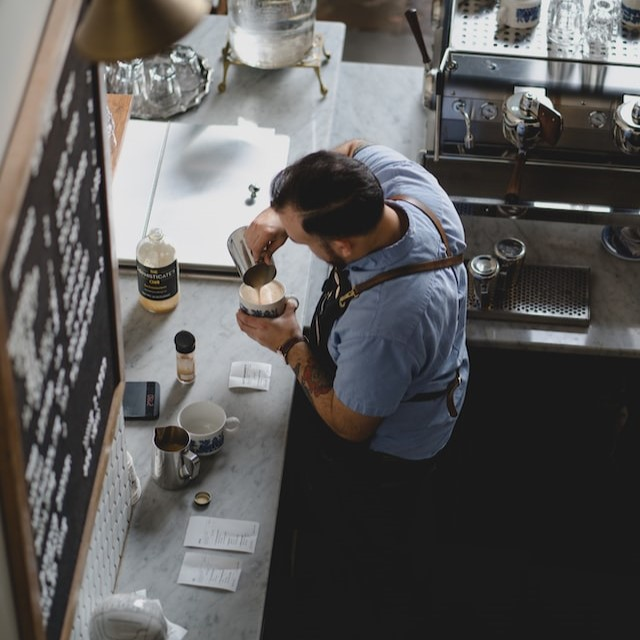
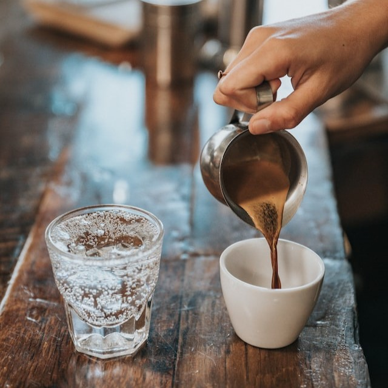
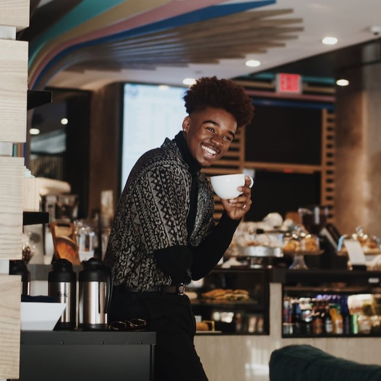

Discover the Perfect Blend of Taste and Ambience
at Perky and Beans Your Go-To Coffee Shop!
Discover Your New Favourite Coffee Shop.
Come Visit Us Today!



Our History
The Bandeira family's passion for coffee began with Wilson Bandeira,
who learned the craft from his father and grandfather in Rio de
Janeiro. He honed his skills over the years, experimenting with
different roasting techniques and blending methods until he achieved
the perfect cup of coffee. Wilson's dedication to his craft paid off,
and his coffee quickly became a favourite among locals and visitors
alike.
In the early 2000s, the Bandeira family decided to expand their
business and bring their coffee to a new market: Dublin, Ireland. They
opened a coffee shop in the heart of the city, where they continued to
roast their coffee beans to perfection and serve them up to customers
with a smile. The response was overwhelmingly positive, and the
Bandeira family soon became known for their rich, flavourful coffee
and warm hospitality.
Despite their success, the Bandeira family never lost sight of their
roots. They continued to use only the finest Arabica beans from
Brazil, which they sourced directly from local farmers. They also
invested in the latest brewing technology, including state-of-the-art
espresso machines and pour-over equipment, to ensure that every cup of
coffee was of the highest quality.
Word of their exceptional coffee spread, and the Bandeira family soon
found themselves exporting their coffee to countries around the world.
Their commitment to quality and their passion for coffee have helped
them establish themselves as a leading brand in the industry, with a
loyal following of customers who appreciate the care and attention
that goes into every cup.
Today, the Bandeira family's legacy lives on, with Wilson's children
and grandchildren continuing the tradition of roasting and blending
coffee beans to perfection. They remain committed to using only the
finest ingredients, and their dedication to their craft is evident in
every cup of coffee they serve. Whether you're in Dublin, Rio de
Janeiro, or anywhere else in the world, you can taste the Bandeira
family's passion for coffee in every sip.
Sign up for our newsletter and rewards program to receive exclusive promotions and discounts, as well as earn points for every purchase you make. Don't miss out on this opportunity to stay connected and receive amazing benefits. Join now and become a valued member of our community!